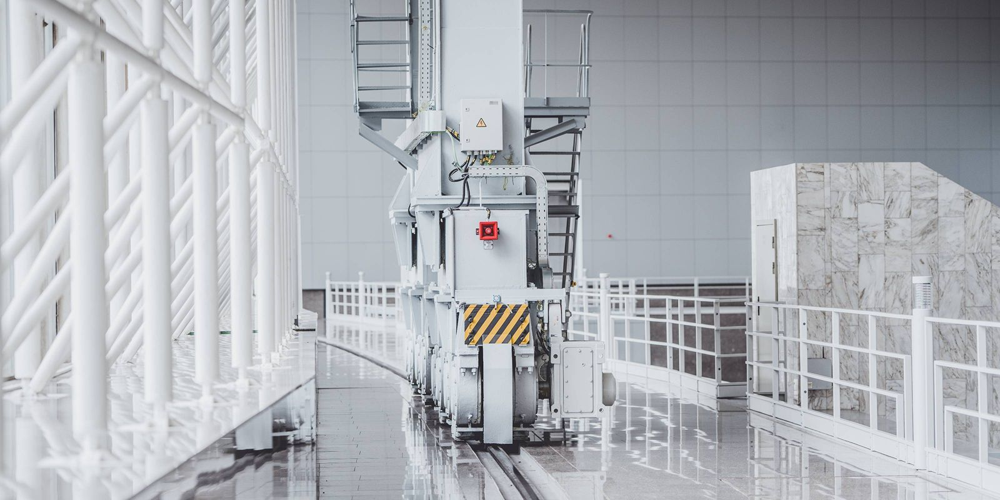

Fabriksrengøring på Lolland-Falster
Stabil og planlagt rengøring i produktion, lager og fællesområder – så I kan holde en høj standard og fokusere på driften.
Kundeanmeldelser
Det siger kunderne på Lolland-Falster om Schier Rengøring
Professionel fabriksrengøring, der passer til jeres hverdag
I en fabrik eller produktionsvirksomhed bliver lokalerne hurtigt påvirket af støv, partikler, trafikspor, spild og mange kontaktflader – og det kan ses på både gulve, overflader og fællesområder. Har I også administration eller kontorpladser, kan vi kombinere løsningen med kontorrengøring. Vi leverer fabriksrengøring i Nykøbing F og på Lolland-Falster med faste aftaler, tydelige rutiner og et resultat, der holder fra uge til uge.
Derfor vælger virksomheder os til fabriksrengøring
- Fast plan og stabil drift
I får en løsning med faste opgaver, aftalt frekvens og ensartet standard – så produktionen ikke bliver forstyrret unødigt. - Tilpasset jeres produktion og flow
Vi tilpasser opgaver og tidspunkter efter skiftehold, belastning og de områder, der kræver ekstra fokus. - Fokus på synlige flader, gulve og kontaktpunkter
Vi prioriterer både det, man lægger mærke til med det samme, og de områder, der hurtigt samler snavs i hverdagen. - Diskret service – før, under eller efter drift
Ofte kan vi gøre rent uden for de travleste tidsrum, så arbejdsdagen kører roligt videre. - Mulighed for miljøvenlige valg, når det giver mening
Vi kan arbejde med metoder og produkter, der tager hensyn til arbejdsmiljø og omgivelser – uden at gå på kompromis med resultatet.
Tryghed og kvalitet i praksis
- Fast kontaktperson og klar kommunikation før, under og efter opstart.
- Aftalte adgangs-, nøgle- og alarmrutiner efter jeres retningslinjer.
- Tjekliste og tydelig standard, så opgaver udføres ens hver gang.
- Løbende kvalitetstjek og hurtige justeringer, hvis behov ændrer sig.
- Respekt for afmærkede områder og interne procedurer på arbejdspladsen.
Hvad kan indgå i en fabriksrengøringsaftale?
Indholdet tilpasses jeres lokaler og produktion, men her er typiske opgaver:
Produktionsområder
- Fejning/støvsugning og gulvpleje (fx hvor der samler sig støv, partikler og trafikspor)
- Aftørring af frie overflader, arbejdsborde og udvalgte kontaktflader
- Oprydning og håndtering af synligt spild efter aftale
- Opfriskning omkring indgange mellem zoner, så områderne fremstår ordentlige
Lager, logistik og gangarealer
- Gulve: støvsugning/fejning og gulvvask efter behov
- Synlige flader, reoler i passende arbejdshøjde og afskærmninger (efter aftale)
- Indgangspartier og gennemgangsarealer – især i våde perioder
- Affaldshåndtering og nye poser efter aftale
Fællesfaciliteter
- Omklædning: bænke, skabe (udvendigt), gulve og kontaktflader
- Toiletter og badefaciliteter: sanitære flader, spejle, gulve og opfyldning efter aftale
- Kantinea/pauserum: bordflader, vask, synlige flader og gulve
Ekstra ydelser (kan tilføjes)
- Periodisk hovedrengøring i udvalgte zoner
- Ekstra fokus i sæsoner med ekstra snavs (fx vinter med salt og meget trafik)
- Vinduespudsning efter aftale
- Genopfyldning af forbrugsartikler efter aftale (papirvarer, sæbe m.m.)
Sådan starter vi op
- Kort dialog og evt. besigtigelse – vi afklarer m², drift, fokusområder og adgang.
- Plan og tjekliste – I får en klar aftale om opgaver, frekvens og standard.
- Opstart med kvalitet i fokus – vi finjusterer de første gange, så niveauet sidder rigtigt.
- Løbende opfølgning – ændrer produktionen sig, kan planen justeres uden bøvl.
Fabriksrengøring, der kan mærkes i hverdagen
Når rengøringen kører stabilt, bliver det lettere at holde orden, skabe et bedre overblik og give medarbejdere (og gæster) et mere professionelt indtryk. Målet er enkelt: I skal kunne møde ind til lokaler, der ser ordentlige ud – og fungerer i praksis.
FAQ om fabriksrengøring
Hvad dækker fabriksrengøring typisk over?
Fabriksrengøring dækker typisk produktion, lager/logistik og fællesfaciliteter som omklædning, toiletter og kantine – med en plan, der passer til jeres drift.
Kan I gøre rent uden at forstyrre produktionen?
Ja, i de fleste tilfælde kan vi planlægge opgaverne, så de udføres uden for de travleste perioder eller helt uden for arbejdstid.
Hvordan håndterer I støv, partikler og trafikspor på gulve?
Vi tilpasser metode og frekvens efter belastning, så gulvene holdes pæne og mere ensartede – fx ved brug af gulvvaskemaskine, hvor det giver bedst mening, og med ekstra fokus i perioder med mere snavs udefra.
Skal vi selv stille midler og udstyr til rådighed?
Det aftales fra start. Mange vælger, at vi medbringer det nødvendige, så det hele er samlet i én løsning.
Kan aftalen ændres, hvis vores behov skifter?
Ja. Hvis der kommer nye zoner, ændrede skiftehold eller sæsonudsving, kan planen justeres, så den følger jeres virkelighed.
Kan I hjælpe med køb og opfyldning af papirvarer?
Ja, efter aftale kan vi stå for indkøb og løbende opfyldning af papirvarer som fx toiletpapir, papirhåndklæder, poser, sæbe og lignende – så I slipper for at holde øje med lager og bestillinger.
Hvad koster fabriksrengøring?
Prisen afhænger af areal, frekvens, adgangsforhold og opgaveindhold. I får altid et uforpligtende tilbud baseret på jeres behov.
Få et uforpligtende tilbud på fabriksrengøring
Kontakt os og fortæl kort om jeres faciliteter, ønsket frekvens og hvilke områder der betyder mest for jer. Så vender vi tilbage med et tilbud på en løsning, der passer til jeres virksomhed.
Telefon: 50 50 76 65 | E-mail: my@schier.dk
Folemarken 59, 4800 Nykøbing F | CVR-nr. 38199633